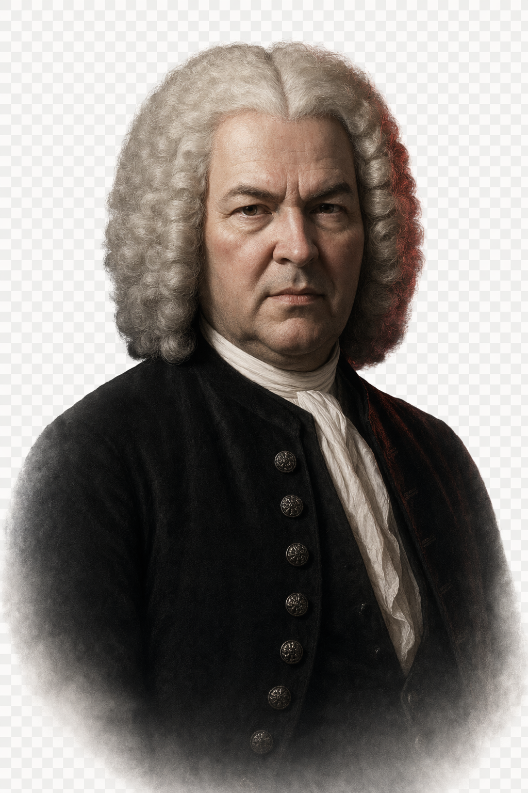
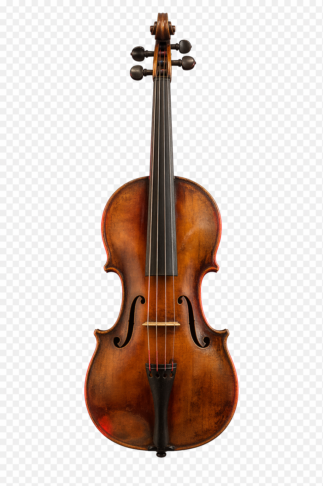
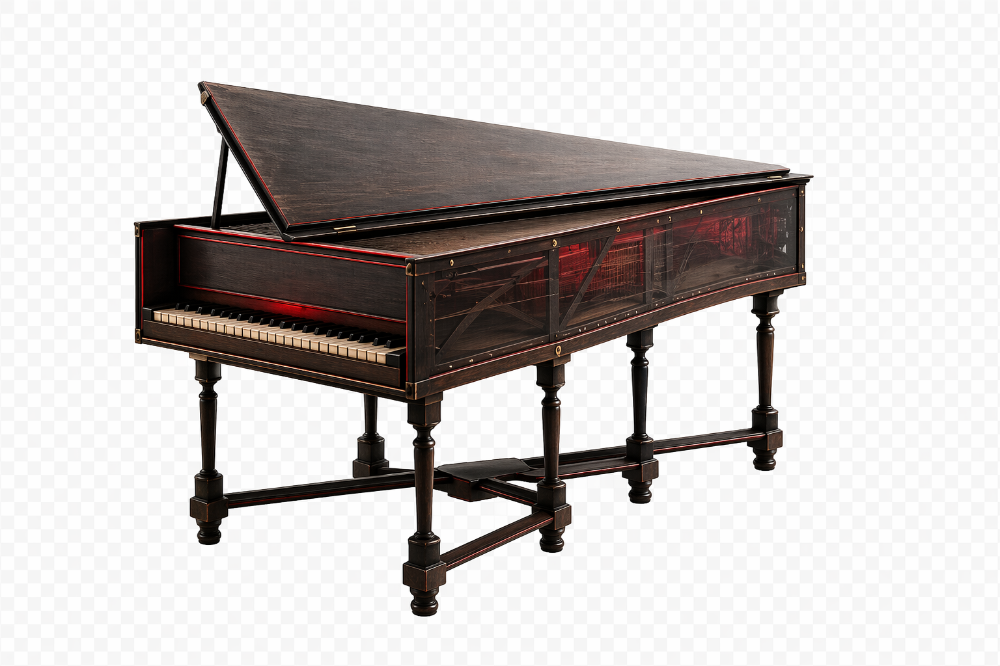
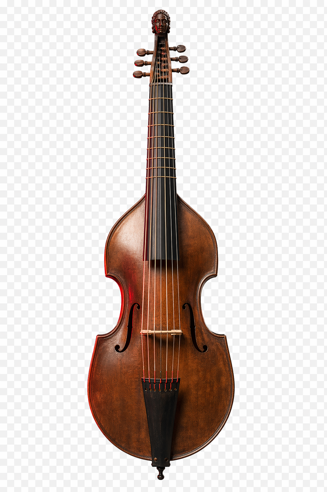
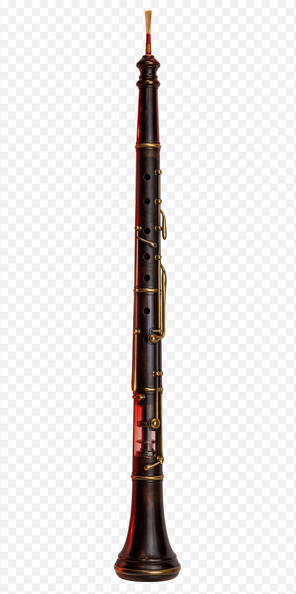
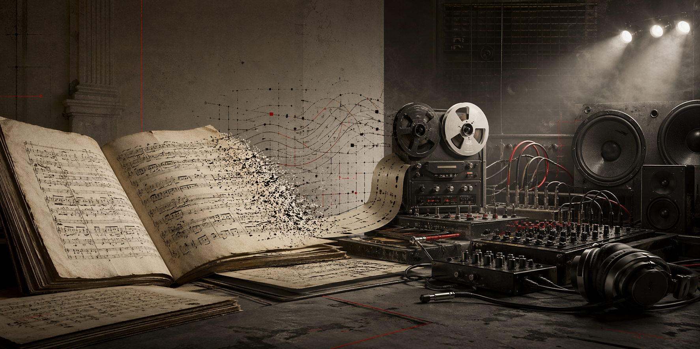
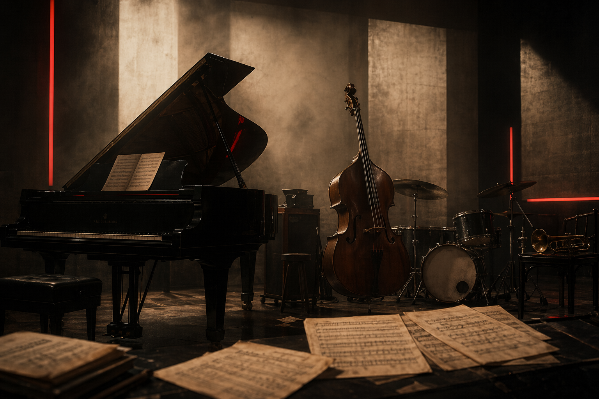
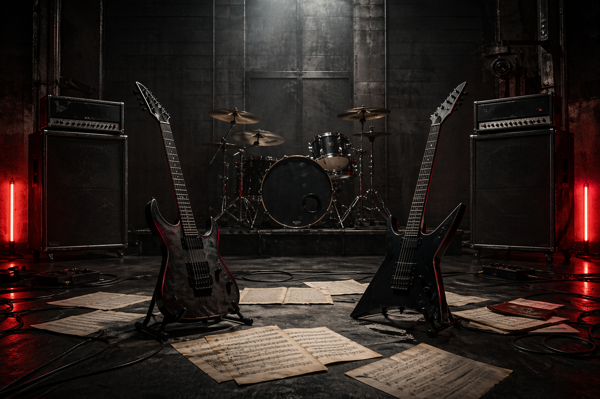

COUNTERPOINT
Independent lines collide without collapsing.
Melodies are written to stand on their own, then interlock with ruthless discipline.
[ BAROQUE TRANSMISSION / UNIT JSB-1685 ]
MUSIC AS ENGINEERED SPACE
Baroque music turns emotion into architecture: repeating bass lines, disciplined ornament, and voices stacked with mechanical precision. Bach is where the entire system locks into focus.
SUBJECT / JOHANN SEBASTIAN BACH

1685
BIRTH YEAR / START OF A CATALOGUE THAT MADE BAROQUE FORM FEEL INEVITABLE.
01
BAROQUE GRAMMAR
CLICK ANY PANEL / OPEN DOSSIER FOR EXTENDED NOTES, EXAMPLES, AND LISTENING ROUTES.
COUNTERPOINT
Melodies are written to stand on their own, then interlock with ruthless discipline.
BASSO CONTINUO
Harpsichord, organ, cello, and bass instruments provide a constant harmonic chassis.
SEQUENCES
A small figure travels upward or downward, building pressure by controlled repetition.
ORNAMENT
Trills, turns, and appoggiaturas sharpen cadence and rhetorical emphasis.
02
BACH CORE
OPEN DOSSIERS FOR BIOGRAPHIC STAGES, CITY SHIFTS, AND THE LONG AFTERLIFE OF THE CATALOGUE.
SYSTEM OVERVIEW
He does not invent the baroque from scratch. He compresses Italian concerto drive, French dance weight, Lutheran chorale gravity, and German contrapuntal study into a catalogue that still feels larger than style.
1685-1703 / EISENACH TO LUENEBURG
Bach grows up inside a dynastic musician network, loses both parents young, and absorbs organ culture while still a student.
1703-1708 / ARNSTADT + MUEHLHAUSEN
Inspection reports, long trips, and restless experimentation show a musician already pushing beyond routine church service.
1708-1717 / WEIMAR
Toccatas, fugues, and chorale preludes push keyboard writing toward scale, drive, and structural drama.
1717-1723 / KOETHEN
The Brandenburg Concertos, violin works, and cello suites show how dance rhythm and precision can coexist.
1723-1750 / LEIPZIG
Cantatas, Passions, coffeehouse works, pedagogy, and late syntheses make the city his main production engine.
1747-1750 / LATE YEARS
The Musical Offering, Mass in B minor, and The Art of Fugue push Bach toward synthesis, compression, and legacy.
SIGNAL
Bach absorbs the full baroque toolkit, then makes it feel larger than style: fugue as logic, chorale as weight, dance as motion, devotion as pressure.
03
WORK CATALOGUE
EACH DOSSIER ADDS HISTORICAL PLACEMENT, WHAT TO LISTEN FOR, AND A YOUTUBE ROUTE.
BWV 1046-1051
A display of color, propulsion, and instrumental dialogue under extreme control.
BWV 846-893
Preludes and fugues across all keys: a map of harmonic possibility and keyboard logic.
BWV 244
Monumental sacred drama where chorales, recitative, and chorus move as one system.
BWV 232
A late synthesis of style, technique, and devotional scale.
BWV 1007-1012
Single-line writing that implies whole structures through pulse and harmony.
BWV 1080
Counterpoint stripped toward pure process, severe and almost abstract.
04
INSTRUMENT TABLE
THE SURFACE STAYS SHORT. EACH CARD OPENS BUILD NOTES, SOUND CHARACTER, AND REPERTOIRE CONTEXT.
SOUND HARDWARE
Bach did not write for abstract tone. He wrote for gut strings, plucked keyboards, pungent reeds, and continuo instruments that spoke faster and lighter than many of their modern descendants.

STRINGS / SOLO ENGINE
A lighter build, shorter fingerboard, and gut strings produce a quicker, grainier attack than the later concert violin.

KEYS / CONTINUO GRID
Its plucked sound does not sustain like a piano. That dryness is the point: harmony becomes rhythm, pulse, and articulated line.

BASS / INNER WEIGHT
Fretted and softer-edged than the cello, the gamba brings an introspective, speech-like bass color to chamber texture.

WINDS / CUTTING EDGE
Fewer keys, a reedier core, and a more pungent edge let the oboe slice through choruses and orchestral fabric with startling bite.
05
LISTENING PROTOCOL
OPEN A STEP TO TURN THE QUICK RULE INTO A PRACTICAL LISTENING METHOD WITH EXAMPLES.
01
It tells you where the harmonic pressure sits and when release is coming.
02
Hear how it resists or aligns with the others instead of treating the texture as a single block.
03
Even severe pieces often retain a bodily pulse inherited from courante, sarabande, gigue, or gavotte.
04
Baroque music stores tension carefully, then lands with unmistakable rhetorical force.
06
MODERN AFTERLIVES
USER-SUPPLIED AUDIO FILES SIT HERE AS LOCAL FIELD RECORDS OF BACH'S AFTERLIFE. PLAY THEM, THEN OPEN THE DOSSIERS.

SIGNAL LEAK / ARCHIVE TO AUDIO HARDWARE
Bach's afterlife is not only conservative reverence. It is re-voicing, reharmonization, distortion, groove, transcription, and genre collision.

PLAYBACK / USER-SUPPLIED MP3
LOCAL FIELD FILE / BWV 31
A sacred Bach signal rerouted through jazz time, color, and ensemble logic: less liturgical mass, more harmonic breath and rhythmic elasticity.

PLAYBACK / USER-SUPPLIED MP3
LOCAL FIELD FILE / BWV 1060
Double-concerto dialogue becomes twin-guitar force: attack, amplification, and rhythmic drive push Bach's line-work into a steel-framed modern register.